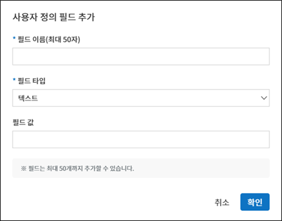
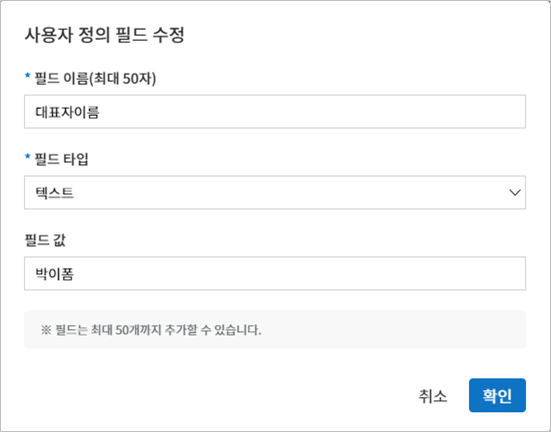

커스터마이즈
사용자 정의 정보셋 관리
회사관리 > 사용자 정의 정보셋 관리에서는 회사, 그룹, 사용자에 관한 필드를 추가하고 편집할 수 있습니다.
Tip
문서에서 자주 사용되는 회사, 그룹, 사용자에 관한 정보(예. 회사 대표번호, 주소, 대표자 명 등)를 사용자 정의 정보셋에서 필드로 추가하고 템플릿 설정 > 필드 설정에서 필요 정보를 자동으로 입력되도록 설정할 수 있습니다.
{kind=link}
- ① 사용자 정의 정보셋 관리 > 회사
회사 대표, 대표 전화번호, 직인 등 회사와 관련된 필드를 추가하고 값을 설정할 수 있습니다.
- ② 사용자 정의 정보셋 관리 > 그룹
부서명, 책임자 등 그룹과 관련된 필드를 추가하고 값을 설정할 수 있습니다.
- ③ 사용자 정의 정보셋 관리 > 사용자
직급, 메일 주소, 전화번호 등 사용자(멤버)와 관련된 필드를 추가하고 값을 설정할 수 있습니다.
- ④ 필드 추가
새로운 필드를 추가합니다. 필드 추가 버튼을 클릭하면 사용자 정의 필드를 추가할 수 있는 팝업창이 나타납니다. 필드 이름 과 필드 타입 (텍스트/ 이미지), 필드 값을 입력한 다음 확인을 클릭하면 목록에 필드가 추가됩니다. 추가된 필드 확인 후 저장 버튼을 눌러 저장합니다.
 - ⑤ 필드 목록
필드 목록에서는 필드 이름과 필드 값을 보여주며, 필드 삭제, 필드값 편집을 할 수 있습니다.
필드를 삭제하려면 해당 필드 목록 왼쪽에 위치한 아이콘(
 )을 클릭합니다.
)을 클릭합니다.- ⑥ 필드 편집
수정할 필드를 선택하여 수정 아이콘()을 클릭하면 사용자 정의 필드 수정 팝업창이 표시되어 필드 이름, 타입, 값 등을 수정할 수 있습니다.
필드의 순서는 해당 필드를 선택한 후 화살표(
 )를 클릭하여 순서를 조정할 수 있습니다.
)를 클릭하여 순서를 조정할 수 있습니다. - ⑦ 저장
사용자 정의 필드 편집이 완료되면 저장 버튼을 클릭해 변경사항을 저장합니다.
{kind=link}
{kind=link}
알림 템플릿 관리
문서 요청시 발송되는 메일/SMS 템플릿을 회사 맞춤형으로 편집할 수 있습니다.
알림 템플릿은 회사 관리 > 알림 템플릿 관리에서 설정하거나 템플릿 관리 > 템플릿 설정 > 알림 설정에서 편집할 수 있습니다.
{kind=link}
회사 관리 > 알림 템플릿 관리에는 기본적인 메일/SMS 템플릿이 설정되어 있으며, 기본 템플릿의 내용 등 변경 및 새로운 알림 템플릿을 추가할 수 있습니다.
기본 템플릿 유형
문서 최종 완료 알림
문서 반려로 인한 수정 요청 알림
문서 상태 알림
문서 검토 및 작성 요청
Tip
헤더는 이폼사인의 로고가 기본으로 설정되어 있습니다. 회사 관리 > 회사 정보 > 브랜드에서 회사의 로고를 등록하면 이메일 템플릿에 회사의 로고가 함께 적용됩니다
알림 템플릿 추가 방법
기존에 등록된 메일/SMS 템플릿 외에 새 알림 템플릿을 추가할 수 있습니다.
사이드바 메뉴에서 회사 관리 > 알림 템플릿 관리를 클릭합니다.
알림 템플릿 관리 화면의 오른쪽 상단에 위치한 알림 템플릿 추가 버튼을 클릭합니다.
알림 템플릿 이름을 설정하고 해당하는 유형을 선택합니다.
이메일 제목 및 SMS 전송 내용을 입력합니다. SMS 전송 내용은 문자로 알림 전송 시 전송되는 메시지로 알림 본문 내용으로 이동할 수 있는 URL과 함께 전송됩니다.
본문 내용을 작성합니다.
저장 버튼을 클릭하여 템플릿으로 추가합니다.
{kind=link}